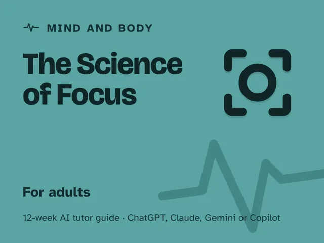

The Science of Focus
$29Instant download: a PDF to read, a browser copy, and the AI-tutor file you hand straight to any AI assistant.Buy it on Etsy →
Take the free placement check first: 15 minutes, and it names the week to start at.
A masterclass you actually finish, because every week ends with a test you run on your own attention, not a tip you just read. "I'm just bad at focusing" is a myth. Attention is a limited-capacity system with a real mechanism behind it, and this 12-week plan teaches that mechanism: why attention is finite, why multitasking is really rapid switching, how dopamine and novelty hijack you, why switching costs so much more than it feels like, and what deep work and flow actually require. You don't collect willpower tips; you understand the system, test it on yourself, and rebuild focus by design.
Format: a deep digital guide: 12 ready-to-run, fully scripted weekly sessions, about 60 minutes each. You lead the session; every step is timed and written out for you, so no background in psychology, neuroscience, or AI is needed. Never used an AI chat assistant before? The guide's front matter walks you from zero to ready in about five minutes, using any free AI assistant.
What you get
- 12 deep weekly sessions (~60 minutes each, fully scripted), each with a plain-language explanation of the mechanism, a concrete worked example, a timed session plan with the AI-tutor prompts for the launch and the checkpoint built in, a "show me" checkpoint, common mistakes to avoid, and optional practice.
- A "Never used an AI chat assistant? Start here" onboarding that takes a complete beginner from zero to ready in about five minutes. No paid plan needed, any free AI assistant works.
- Four rescue prompts in the front matter for when a session goes sideways: you're stuck or overwhelmed, the AI lectures instead of testing you, it feels too easy, or you want to check you understand the mechanism and not just the tip.
- A personal focus system you design and live-test across the season: an environment, a practice, and a maintenance plan for when focus slips again.
The 12 weeks
- Attention Is Limited (And That's Not a Flaw)
- The Myth of Multitasking
- How Distraction Hijacks You
- The Cost of Switching
- Deep Work & Flow
- Designing a Focus Environment
- Rest & the Wandering Mind
- Digital Habits That Drain You
- A Focus Practice That Holds
- Project Week I: Design Your Focus System
- Project Week II: Live the System
- Demo Day & the Attention You Rebuilt
Who it's for
Adults who feel scattered, drop things mid-task, or blame themselves for a "bad attention span" and want to actually understand and rebuild it, not just collect another productivity tip. No background in psychology or neuroscience assumed; if you have a phone and something you want to focus on, you're ready.
Why this instead of a free chatbot
Ask a raw chatbot for focus tips and you'll get a generic list you've seen a hundred times, with no way to tell if it's working. This pack ships the structure and honesty it lacks: a real mechanism-by-mechanism progression, and a tutor set up to make you test each idea on your own attention (your own drift count, your own switching cost, your own triggers) before it hands you a technique. The difference between reading about focus and rebuilding yours on purpose.
FAQ
- Do I need any background in psychology or neuroscience? No. Every mechanism is taught from first principles and tested on your own attention as you go; week 1 assumes nothing.
- Which AI does it use? What if I've never used one? Any modern AI assistant works: ChatGPT, Claude, Copilot, Gemini. The free version of any of them is enough; no paid plan needed. If you've never used an AI chat assistant before, the guide's first section walks you from zero to ready in about five minutes.
- Is this just another list of productivity hacks? No. The hacks (environment design, batching, deep work blocks) are in here, but the point is understanding why each one works, so you can invent your own fix the next time something new steals your focus.
- How much time does it take? You lead one ~60-minute session each week. Every step is timed and written out for you, with the tutor instructions included. A few warm-ups happen before the session (a day's log of phone pickups, a 15-minute work test, a 10-minute walk), and the guide says which. No expertise needed.
- Does it work outside the US? Yes. The guide is written in US English, and every prompt tells the AI to use your country or region (as you give it, as it infers, or by asking) for spelling, units, money, and examples.
- Is it a treatment for ADHD? No. It teaches general attention mechanics and is not a diagnosis or treatment for any condition. If focus trouble is seriously affecting your life, the guide suggests talking to a qualified professional.
- Refunds? Standard marketplace refund policy applies.
$29Instant download: a PDF to read, a browser copy, and the AI-tutor file you hand straight to any AI assistant.Buy it on Etsy →